Как это выглядит
на самом деле.
23 снимка: от клетки до поверхности золота и Солнца. Сравнивай наблюдение с интерактивной моделью и открывай кадр крупно.
Микроскопы и детекторы показывают то, чего не видно глазом. В каждой подписи объяснены метод, условные цвета и ограничения. Сведения и лицензии проверены 03.11.2026.
Показано 23 из 23 снимков

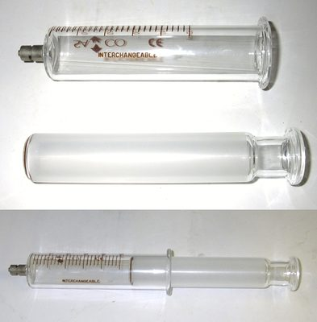
Увеличить фото ↗Фотография прибора
Газовый шприц
Газовый шприц собирает газ и позволяет отсчитывать его объём по шкале. Газ внутри обычно не виден: отдельные молекулы гораздо меньше разрешения обычной камеры.
Сравни подвижный поршень и шкалу с моделью газа. По одному фото нельзя определить давление и температуру.
Geni · CC BY-SA 3.0 · Источник ↗
Полный кадр · уменьшено, JPEG.

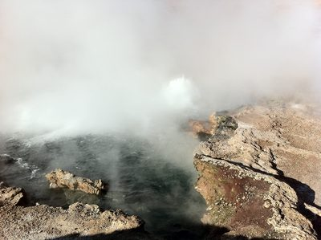
Увеличить фото ↗Фотография явления
Горячая вода в Эль-Татио
Геотермальный источник Эль-Татио в Чили. Белое облако над горячей водой состоит из мельчайших капель, образовавшихся при конденсации. Сам водяной пар прозрачен.
В модели точки обозначают молекулы. На фото видны капли из множества молекул; испарение идёт и без кипения.
Juan de Dios Santander Vela · CC BY-SA 2.0 · Источник ↗
Полный кадр · уменьшено, JPEG.

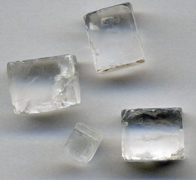
Увеличить фото ↗Макрофотография
Кристаллы поваренной соли
Галит — кристаллический NaCl. Эти образцы имеют размер около 1–2 см. Кубическая форма связана с упорядоченным расположением ионов в кристалле.
В модели показаны отдельные Na⁺ и Cl⁻ при растворении. Фото показывает целые кристаллы, а не отдельные ионы.
James St. John · CC BY 2.0 · Источник ↗
Полный кадр · уменьшено, JPEG.

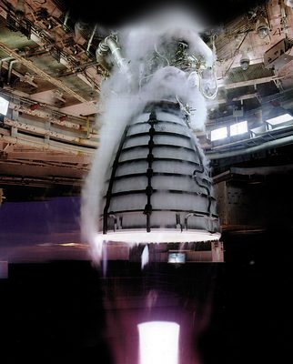
Увеличить фото ↗Фотография испытания
Водород и кислород: испытание RS-25
Огневое испытание ракетного двигателя RS-25. Он использует водород и кислород; при их реакции образуется вода и выделяется энергия. Белое облако вокруг стенда также связано с системой охлаждения и конденсацией.
Уравнение 2H₂ + O₂ → 2H₂O описывает общий баланс атомов. В двигателе идёт множество промежуточных реакций.
NASA / Aerojet Rocketdyne · Общественное достояние · Источник ↗
Полный кадр · уменьшено, JPEG.

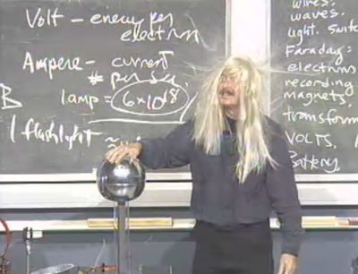
Увеличить фото ↗Фотография демонстрации
Электростатика в аудитории
Ричард Мюллер демонстрирует генератор Ван де Граафа. Волосы получают одноимённый заряд и расходятся из-за электрического отталкивания.
Реальные заряды распределены по телу и волосам, а в модели заменены двумя неподвижными точечными зарядами.
Drbaker171 · Общественное достояние · Источник ↗
Полный кадр · уменьшено, JPEG.

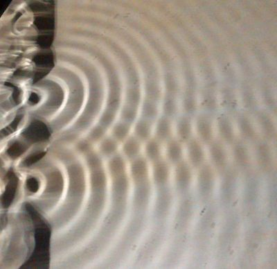
Увеличить фото ↗Фотография опыта
Волны в лабораторной ванне
Фотография лабораторного опыта с двумя источниками волн на воде. Перекрывающиеся возмущения образуют интерференционную картину.
Это волны на поверхности воды. В 3D-модели электромагнитной волны стрелки обозначают поля E и B: сама среда не колеблется как вода.
Psgs123xyz · CC0 · Источник ↗
Полный кадр · уменьшено, JPEG.

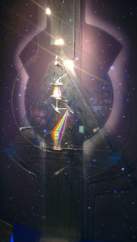
Увеличить фото ↗Фотография оптического опыта
Свет, разделённый на цвета
Экспонат музея Урании Московского планетария показывает разложение света. Разным цветам видимого света соответствуют разные диапазоны длин волн.
На фото показан спектр света, а не отдельные фотоны. Непрерывная цветная полоса отличается от набора узких линий в модели атомных спектров.
Максим Улитин · CC BY 3.0 · Источник ↗
Полный кадр · уменьшено, JPEG.

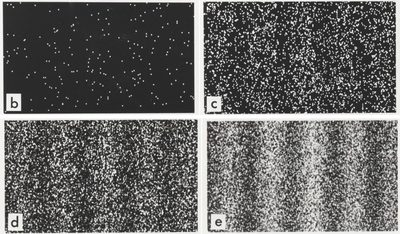
Увеличить фото ↗Экспериментальные данные
Как накапливается квантовая интерференция
Результаты опыта Акиры Тономура с электронами: отдельные регистрации постепенно складываются в интерференционные полосы. Показаны электроны, а не фотоны.
Это записи попаданий на детектор, а не фотография траекторий. В оригинальном опыте использован электронный бипризм; модель двух щелей иллюстрирует тот же принцип накопления интерференции.
Dr. Tonomura / Belsazar · CC BY-SA 3.0 · Источник ↗
Полный кадр · уменьшено, JPEG.

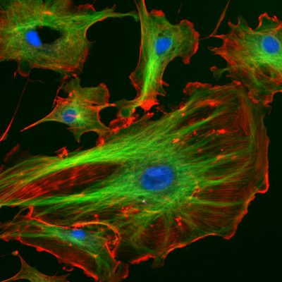
Увеличить фото ↗Флуоресцентная микроскопия
Клетки под флуоресцентным микроскопом
Эндотелиальные клетки лёгочной артерии коровы. Метки выделяют ядра синим, микротрубочки зелёным, актин красным. Это цвета флуоресцентных красителей, а не естественная окраска клетки.
Видны только помеченные структуры. 3D-модель объединяет больше органелл и условно раздвигает их, чтобы можно было рассмотреть каждую.
NIH ImageJ / Molecular Probes; автор в источнике не указан · Общественное достояние · Источник ↗
Полный кадр · уменьшено, JPEG.

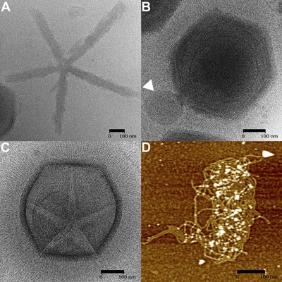
Увеличить фото ↗Криоэлектронная и атомно-силовая микроскопия
ДНК на настоящем микроснимке
В панели D (внизу справа) атомно-силовой микроскоп показывает ДНК, вышедшую из мимивируса. Панели A–C — криоэлектронные снимки вирусных структур. Масштабная черта в каждой панели — 100 нм.
ДНК в панели D выглядит как тонкая нить; отдельные основания и витки двойной спирали здесь не разрешены. Цветная спираль в модели — учебная схема.
Chuan Xiao и соавт., PLOS Biology (2009), рис. 6 · CC BY 2.5 · Источник ↗
Полный кадр · уменьшено, JPEG.

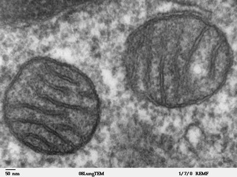
Увеличить фото ↗Просвечивающая электронная микроскопия
Настоящие митохондрии: складки внутри
Тонкий срез лёгочной ткани млекопитающего: две митохондрии со складками внутренней мембраны — кристами. Снимок получен на электронном микроскопе JEOL 100CX.
Цикл Кребса — последовательность реакций, а не видимое кольцо. Большинство его ферментов находится в матриксе; дыхательная цепь и ATP-синтаза связаны с внутренней мембраной.
Louisa Howard · Общественное достояние · Источник ↗
Полный кадр · уменьшено, JPEG.

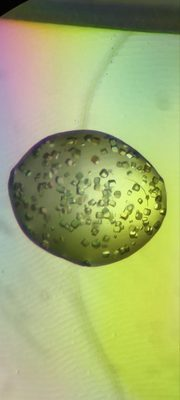
Увеличить фото ↗Микрофотография кристаллов
Кристаллы фермента лизоцима
Кристаллы белка лизоцима под микроскопом. Каждый кристалл содержит множество упорядоченно расположенных белковых молекул.
Это настоящие кристаллы фермента, но не снимок одной молекулы или её активного центра. Для атомной структуры используют, например, рентгеновскую дифракцию.
Ilyassova Bayan · CC0 · Источник ↗
Полный кадр · уменьшено, JPEG.

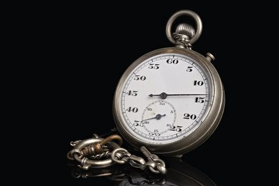
Увеличить фото ↗Фотография прибора · стекинг фокуса
Что именно измеряет секундомер
Механический секундомер. Изображение собрано из 25 фотографий с разной фокусировкой, чтобы весь циферблат был резким.
При ручном запуске результат включает задержку реакции человека. Разброс повторов и цена деления — разные источники неопределённости; одна фотография их не измеряет.
Ansgar Koreng · CC BY-SA 4.0 · Источник ↗
Полный кадр · уменьшено, JPEG.

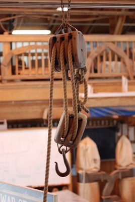
Увеличить фото ↗Фотография механизма
Настоящий полиспаст
Система блоков в Harvey W. Smith Watercraft Center, Бофорт, Северная Каролина. Несколько ветвей каната позволяют уменьшить усилие при подъёме груза.
Уменьшая силу, приходится вытягивать больше каната. В реальном механизме есть трение и потери, поэтому выигрыш по силе отличается от идеального.
Jarek Tuszyński · CC BY-SA 3.0 · Источник ↗
Полный кадр · уменьшено, JPEG.

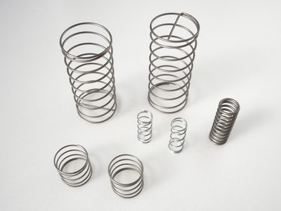
Увеличить фото ↗Фотография предметов
Пружины сжатия
Реальные металлические пружины сжатия разного размера. При упругой деформации они накапливают энергию.
Закон F = kx и энергия kx²/2 применимы в линейном упругом диапазоне. Внешний вид не определяет жёсткость без измерений.
Batholith · Общественное достояние · Источник ↗
Полный кадр · уменьшено, JPEG.

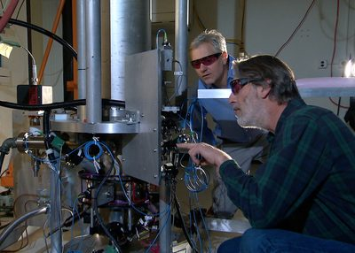
Увеличить фото ↗Историческая фотография · 2014
Атомные часы NIST-F2
Стив Джеффертс и Том Хивнер с цезиевыми фонтанными часами NIST-F2. Это лабораторная установка, использующая частоту атомного перехода, а не маленькие часы внутри атома.
Фото сделано в 2014 году. Оно иллюстрирует принцип атомных часов; актуальное определение секунды приведено в источниках курса.
NIST, Time and Frequency Division · Общественное достояние · Источник ↗
Полный кадр · уменьшено, JPEG.

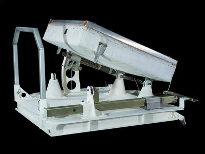
Увеличить фото ↗Музейная фотография прибора
Лазерный отражатель Apollo
Лазерный уголковый отражатель из коллекции Smithsonian: вид корпуса и опорной рамы. Такие массивы зеркал возвращают свет к источнику и использовались на Луне в миссиях Apollo 11, 14 и 15.
Время полёта импульса измеряют туда и обратно: расстояние до отражателя равно c·Δt/2. На фото музейный экспонат, а не действующая установка на Луне.
Smithsonian National Air and Space Museum / Mark Avino · CC0 · Источник ↗
Полный кадр · уменьшено, JPEG.

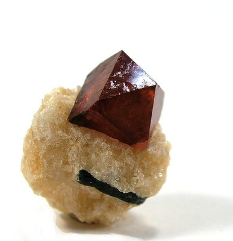
Увеличить фото ↗Макрофотография минерала
Циркон — образец для изотопных часов
Кристалл циркона на кальците из Пакистана. Весь образец около 1,8 × 1,5 × 1,1 см. Цирконы часто используют для уран-свинцового датирования.
Возраст нельзя прочитать по цвету или форме кристалла. Нужны измерения изотопных отношений и проверка того, как образец сохранял исходные вещества и продукты распада.
Robert M. Lavinsky / iRocks.com · CC BY-SA 3.0 · Источник ↗
Полный кадр · уменьшено, JPEG.

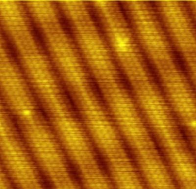
Увеличить фото ↗Сканирующая туннельная микроскопия · 2006
Атомная поверхность золота
Поверхность Au(100), измеренная Эрвином Россеном в Техническом университете Эйндховена. Видна атомная структура поверхности, перестроившейся относительно объёмного кристалла.
Контраст получен по туннельному току, а не обычной камерой. Цвет условный; светлые точки не являются фотографиями шариков или электронных орбит.
Erwin Rossen / Erwinrossen · Общественное достояние · Источник ↗
Полный кадр · уменьшено, JPEG.

Фотография действия
Бросок настоящей монеты
Бросок монеты, снятый камерой. Результат отдельного броска зависит от начальных условий и взаимодействия с окружающей средой.
Вероятность 1/2 — предположение симметричной модели. Одного снимка недостаточно, чтобы проверить честность монеты: нужна серия наблюдений.
ICMA Photos · CC BY-SA 2.0 · Источник ↗
Полный кадр · уменьшено, JPEG.

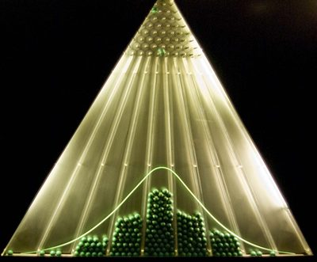
Увеличить фото ↗Фотография демонстрационного прибора
Доска Гальтона в действительности
Шарики проходят между рядами препятствий и собираются в нижних ячейках доски Гальтона. Такой прибор показывает, как из множества случайных отклонений возникает устойчивое распределение.
В идеальной модели шаги независимы. У настоящих шариков есть размеры, столкновения и особенности запуска; профиль не обязан точно повторять гладкую гауссову кривую.
Antoine Taveneaux · CC BY-SA 3.0 · Источник ↗
Полный кадр · уменьшено, JPEG.

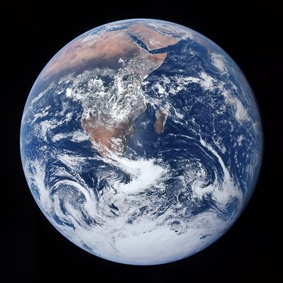
Увеличить фото ↗Космическая фотография · 1972
Земля с Apollo 17
Знаменитый кадр AS17-148-22727, снятый в полёте Apollo 17. Видны облака, Африка и Антарктида; это фотография Земли, а не компьютерная модель планеты.
Размеры и расстояния планет в сохранённой 3D-модели сильно изменены для удобства. Фото показывает внешний вид одной планеты.
Harrison Schmitt / Apollo 17 / NASA · Общественное достояние · Источник ↗
Полный кадр · уменьшено, JPEG.

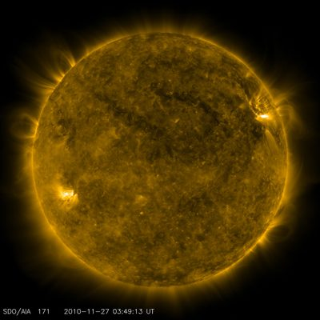
Увеличить фото ↗Ультрафиолетовые наблюдения · 27.11.2010
Солнечная корона глазами SDO
Солнце в канале AIA 171 Å космической обсерватории SDO. Излучение экстремального ультрафиолета показывает структуры горячей короны.
Жёлто-золотой цвет назначен данным прибора: человек не видит это излучение глазами. Это один момент наблюдений, а не фотография всей эволюции звезды.
NASA/SDO and the AIA, EVE, and HMI science teams · Общественное достояние · Источник ↗
Полный кадр · уменьшено, JPEG.